Tabs
Every rule that paints this component, in one file. Colour through a role, geometry straight from a primitive.
What it is
Every place in this product where one region shows one of several things. Four content tabs on an event, two on My Bets, three segments on the profile, and the small segmented switchers for comment sort, the resolution rules and the chart's time range.
They are one component because they are one mechanism, and the mechanism is the decision: a hidden radio input and a label, so the state lives in the DOM rather than in a script. Nothing here needs JavaScript to remember which tab you are on, which is why the tabs survive on a page loaded from a file, in a print, and with scripting off.
Anatomy
Which part is which, in the product's own words. Every class named here is one this file styles, and the build fails if it is not.
.ed-tabs,.ed-tabwrap,.ed-tabbar- the event's tab strip and the region under it..ed-tabradio- the hidden input that IS the state. It is a real form control, so the arrow keys and the tab order come from the browser..ed-tablabel- what a person actually presses, and.ed-tab-countthe number beside a label when the tab has one..ed-tabpanel- one panel, and.ed-panel-comments,.ed-panel-holders,.ed-panel-positionsand.ed-panel-activitythe four of them..tabs- the My Bets pair, Active and History. Two tabs, a different mechanism, because these are two screens with two URLs rather than two panels..ptabs,.ptab-bar,.ptab-in,.ptab-lbl,.ptab-panel- the profile's three, on the same radio mechanism as the event's..rules-tabs,.rules-tab- Rules and Market Context, the one pair in this product where the two segments make different promises..ed-range- the chart's time range. It is here rather than incomponents/chart.csson purpose, and the STATIC entry on the chart names it.
One class left this file on 2026-08-03 and it is named here rather than quietly dropped. The small segmented switcher went to components/comments.css (docs/backlog.md 17). It lived here because this file "owns every switcher", and that sentence was the defect: all seven rules are scoped .cmt-controls, so the ownership was a CATEGORY and not a containment, and it cost _levels.ORDER_BREAK a hand-written cycle - the tab strip holds the thread, and the thread held a piece of the tab strip. The cycle went with the rules.
Live
The component in the markup it ships with, quoted from the frozen kit, inside the product's own wrapper and painted by components/index.css alone. Each frame is a page of its own, so the width under the title is a real viewport and the media queries answer to it.
state The tabs are a CSS-only radio switch, so the strip works here exactly as it does on a screen.
Also rendered inside
The same markup, shown once on the page of the component that owns it. Nothing here is a second copy.
States, as they look
Photographs, not renderings. Each was taken in the specimen linked beside it with a REAL pointer, a real Tab and the mouse button really held down (ui-kit/_verify/states.cjs); nothing here is a state faked with a stand class, which is the rule this section used to be missing because of. One row per distinct FACE: two elements that measure the same at rest are one picture, however many screens carry them, and that grouping is computed rather than chosen. The pictures go stale the moment a rule changes, so each one records the files it was taken from and python3 ui-kit/_states.py fails when their bytes move.
The input that holds the state. It is off-screen rather than display:none, which is why it can be focused at all, and the focus it takes is what draws the ring on the label beside it.

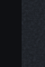
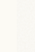

Not staged: hover, active. No specimen puts this one where the state can be raised, which is a specimen debt and not a missing rule.
The open tab: brass ink and a lit edge under it. All four faces, and the label is what receives the pointer because the input is not where a person is looking.


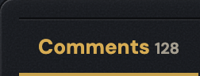
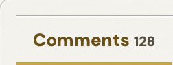


Not staged: focus. No specimen puts this one where the state can be raised, which is a specimen debt and not a missing rule.
A tab that is not open, at rest, hovered, held and focused. Quiet ink, ground answers, and the strip does not reflow: four tabs that change width as a thumb crosses them are four moving targets.
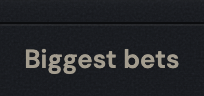
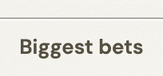
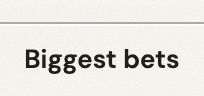
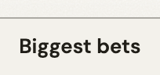
Not staged: focus. No specimen puts this one where the state can be raised, which is a specimen debt and not a missing rule.
The profile's radio, the same mechanism on a different screen.
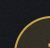
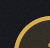
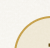
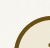
Not staged: hover, active. No specimen puts this one where the state can be raised, which is a specimen debt and not a missing rule.
The profile's open tab.
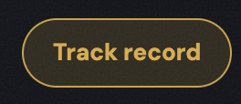


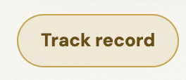
Not staged: focus. No specimen puts this one where the state can be raised, which is a specimen debt and not a missing rule.
A profile tab that is not open. It is worth comparing this face with the event's: same mechanism, different ground, and the difference between them is the plate underneath rather than the control.

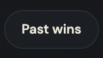
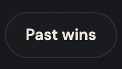

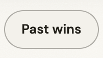
Not staged: focus. No specimen puts this one where the state can be raised, which is a specimen debt and not a missing rule.
Active or History, whichever you are on. Two tabs that are also two pages, which is why they are anchors around buttons rather than labels around inputs.
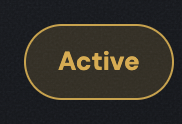


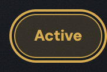
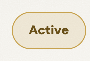


The one you are not on, all four faces.

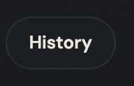
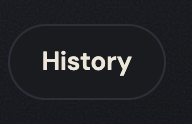
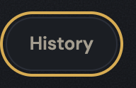
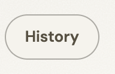

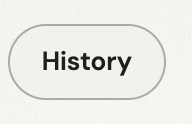
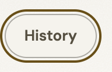
An unchosen window, all four faces. Same quiet ground as every other unchosen segment in the product, which is the point of there being one switcher shape rather than three.
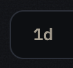
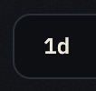
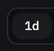
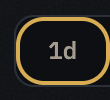
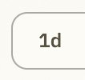
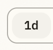
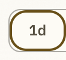
The chosen window of the .ed-range strip (1d / 1w / 1m / all), all four faces. It is the switcher this file still owns after .seg left for components/comments.css on 2026-08-03, and it is the better specimen of the pair: the range strip changes what the CHART shows, so the chosen face has to read at a glance from across the plot.
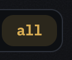
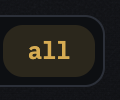
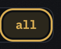
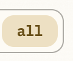


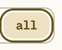
When to use
The judgement a generator cannot read out of css, and the reason ui-kit/authored/tabs.md exists.
When one region on a screen has several contents and a person picks between them without leaving. That is the whole test, and it is what separates this from every navigation control in the product: after pressing a tab you are still on the same page.
Two or more panels, never one. A single tab is a heading.
Not for a filter. A tab shows a different SET; filters narrows the one you are looking at, and it announces its current value in its own label because that is the thing a person forgets.
The chart's range switch belongs here even though it lives on the chart. That is why components/chart.css is in _levels.STATIC with a line pointing at .ed-range: the plot answers no pointer, and the only thing on it that does is one of these.
The rule, and the anti-rule
One sentence to follow and one mistake worth naming. An anti-rule has to name the component that should have been used instead, or it is a complaint rather than an address, and the build checks that it does.
The state is in the markup: a hidden radio and a label, so which tab is open survives a reload, a keyboard and a browser with no script running.
Never draw a tab strip as a row of button controls: the family in components/button.css is for things that DO something, and a filled chip in a tab bar makes the current panel look like an action that has been taken. What a tab needs is a label and a state, and the label is the control.
Seen: voice/docs/microcopy.md Step 25, where exactly this confusion had already shipped in the other direction - a switch was built with its state written INSIDE the control as the word off, drawn in the browser's default black at 1.42:1 on graphite, on 19 screens in both trees. It was never meant to be read; a control that has to say its own state in words is a control wearing the wrong mechanism.
Roles it reads
Colour comes in only through these. Change one on the token page and it changes here and on every screen at once.
--bg-chip--bg-pressed--bg-well--border-hairline--color-action--edge-groove-dark--edge-groove-light--focus-ring--text-brass--text-muted--text-primary--tint-brass-16Classes
Every class this file styles, and how many of the 105 painted screens carry it. A zero is not automatically dead: the last column says whether the class is built at runtime, shown only in the kit, a leftover of the grey wireframes, used by a course page, or genuinely used by nothing. Gate 30 fails the build on the last kind.
| class | screens | if zero |
|---|---|---|
| .app-case | 105 | |
| .ed-panel-activity | 9 | |
| .ed-panel-comments | 9 | |
| .ed-panel-holders | 9 | |
| .ed-panel-positions | 9 | |
| .ed-range | 9 | |
| .ed-rules | 9 | |
| .ed-tab-count | 9 | |
| .ed-tabbar | 9 | |
| .ed-tablabel | 9 | |
| .ed-tabpanel | 9 | |
| .ed-tabradio | 9 | |
| .ed-tabs | 9 | |
| .ed-tabwrap | 9 | |
| .ptab-bar | 2 | |
| .ptab-in | 2 | |
| .ptab-lbl | 2 | |
| .ptab-panel | 2 | |
| .ptabs | 2 | |
| .rules-tab | 9 | |
| .rules-tabs | 9 | |
| .sel | 105 | |
| .tabs | 9 |
Where it stands
Written from
The authored half of this page is the one artefact here no gate can read: a sentence cannot be checked for being true. So it names its sources before it says anything, and the build fails when one of them does not exist. Read this first if you doubt a claim above it.
ui-kit/docs/inventory.mdL107 - "Content tab strip (Comments / Biggest bets / Bets / Activity, CSS radio)", filed L3, on event-detail and its bet variants, state "per-tab active".ui-kit/docs/inventory.mdL67 - "Active / History tabs (.tabs)", on My Bets, 9.ui-kit/docs/inventory.mdL113 - "Segmented switcher (.seg/.rules-tabs/.ed-range)", on the event's comments, rules and chart, state "active segment", 9.ui-kit/docs/inventory.mdL102 - the chart's time-range switch, filed jointly undercomponents/tabs.cssandcomponents/chart.css, which is the seam between the two components.voice/docs/microcopy.mdStep 14 - the labels this strip carries, and the rewrite that produced them: Top Holders to Biggest bets, Positions to Bets.voice/docs/microcopy.mdStep 25 - "The switch that said its own state (19 screens, both trees)", found by re-measuring contrast rather than by reading: a control carried the wordoffinside the pill at 1.42:1 because it was never meant to be read. The lesson is this component's, since a switch is what a segment becomes when there are two of them.ui-kit/docs/backlog.mdS16 and S17 - the shape this component keeps out of other files: one control declared more than once and kept in step by hand.- The 20 painted screens, and the profile redesign's CSS-only Track-record / Past-wins / Resolved tabs, whose structure stayed in the grey tree.
What the file says
The selectors and the css, for a person about to edit them. To change this component, edit components/tabs.css; to change a value it reads, edit the role in components/tokens.css.
Every state rule, and what it moves
| selector | what moves |
|---|---|
| #edtab-comments:checked ~ .ed-panel-comments,#edtab-holders:checked ~ .ed-panel-holders,#edtab-positions:checked ~ .ed-panel-positions,#edtab-activity:checked ~ .ed-panel-activity | display:block |
| .app-case .rules-tab:hover | color:var(--text-primary) |
| .app-case .rules-tab:active | background:var(--bg-pressed) |
| .app-case .rules-tab.sel | color:var(--text-primary);border-bottom-color:var(--color-action) |
| .app-case .ed-tablabel:hover | color:var(--text-primary) |
| .app-case .ed-tablabel:active | background:var(--bg-pressed) |
| .app-case #edtab-comments:checked ~ .ed-tabbar label[for="edtab-comments"],.app-case #edtab-holders:checked ~ .ed-tabbar label[for="edtab-holders"],.app-case #edtab-positions:checked ~ .ed-tabbar label[for="edtab-positions"],.app-case #edtab-activity:checked ~ .ed-tabbar label[for="edtab-activity"] | background:transparent;color:var(--text-brass);font-weight:var(--weight-bold);box-shadow:inset 0 -2px 0 var(--color-action) |
| .app-case #edtab-comments:focus-visible ~ .ed-tabbar label[for="edtab-comments"], .app-case #edtab-holders:focus-visible ~ .ed-tabbar label[for="edtab-holders"], .app-case #edtab-positions:focus-visible ~ .ed-tabbar label[for="edtab-positions"], .app-case #edtab-activity:focus-visible ~ .ed-tabbar label[for="edtab-activity"] | outline:var(--ring) solid var(--focus-ring);outline-offset:calc(var(--ring) * -1) |
| .app-case .tabs button:hover | color:var(--text-primary) |
| .app-case .tabs button:active | background:var(--bg-pressed) |
| .app-case .ptab-lbl:hover | color:var(--text-primary) |
| .app-case .ptab-lbl:active | background:var(--bg-pressed) |
| .app-case #ptab-record:checked ~ .ptab-bar label[for="ptab-record"],.app-case #ptab-wins:checked ~ .ptab-bar label[for="ptab-wins"],.app-case #ptab-resolved:checked ~ .ptab-bar label[for="ptab-resolved"] | background:color-mix(in oklab,var(--color-action) 16%,transparent);border-color:var(--color-action);color:var(--text-brass);font-weight:var(--weight-bold) |
| .app-case #ptab-record:focus-visible ~ .ptab-bar label[for="ptab-record"], .app-case #ptab-wins:focus-visible ~ .ptab-bar label[for="ptab-wins"], .app-case #ptab-resolved:focus-visible ~ .ptab-bar label[for="ptab-resolved"] | outline:var(--ring) solid var(--focus-ring);outline-offset:calc(var(--ring) * -1) |
| .app-case .ed-range button:hover | color:var(--text-primary) |
| .app-case .ed-range button:active | background:var(--bg-pressed) |
| .app-case .ed-range button.sel | background:var(--tint-brass-16);color:var(--text-brass);font-weight:var(--weight-semibold) |
| #ptab-record:checked ~ #p-record,#ptab-wins:checked ~ #p-wins,#ptab-resolved:checked ~ #p-resolved | display:block |
The tokens these states read, on both grounds
Neither panel is a screenshot. Each carries data-theme itself, so the token resolves inside it and a role that was given a value in only one theme shows up here as a control that does not move.
--text-primaryConfirm betthe label, on the ground this state puts it on--bg-pressedConfirm betthe ground the control settles onto--color-actionConfirm betthe ground the control settles onto--text-brassConfirm betthe label, on the ground this state puts it on--focus-ringConfirm betthe ring, at the width and offset it ships with--tint-brass-16Confirm betthe ground the control settles onto--text-primaryConfirm betthe label, on the ground this state puts it on--bg-pressedConfirm betthe ground the control settles onto--color-actionConfirm betthe ground the control settles onto--text-brassConfirm betthe label, on the ground this state puts it on--focus-ringConfirm betthe ring, at the width and offset it ships with--tint-brass-16Confirm betthe ground the control settles ontocomponents/tabs.css
/* components/tabs.css
Component: tabs. Classes: .ed-panel-activity, .ed-panel-comments, .ed-panel-holders, .ed-panel-positions, .ed-range, .ed-tab-count, .ed-tabbar, .ed-tablabel, .ed-tabpanel, .ed-tabradio, .ed-tabs, .ed-tabwrap, .ptab-bar, .ptab-in, .ptab-lbl, .ptab-panel, .ptabs, .rules-tab, .rules-tabs, .tabs.
Reads: --bg-chip, --bg-pressed, --bg-well, --border-hairline, --color-action, --edge-groove-dark, --edge-groove-light, --focus-ring, --text-brass, --text-muted, --text-primary, --tint-brass-16
Stand: ui-kit/tabs.html
Stands on: 20 ui-visual screens (active-bets-empty-new.html, active-bets-empty-resolved.html, active-bets-error.html, active-bets-history-empty.html, active-bets-history-error.html, ...)
Colour goes through a role, geometry straight from a primitive. No em dash. */
.tabs{display:flex}
.tabs button{border-bottom:1px solid var(--border-hairline)}
.ed-tabs{padding:0}
.ed-tabradio{position:absolute;left:-9999px}
.ed-tabbar{display:flex;gap:0;overflow-x:auto}
.ed-tablabel{flex:0 0 auto;padding:var(--space-8) var(--space-12);cursor:pointer;white-space:nowrap}
.ed-tab-count{font-size:var(--text-10)}
.ed-tabpanel{display:none;padding:var(--space-8)}
#edtab-comments:checked ~ .ed-panel-comments,#edtab-holders:checked ~ .ed-panel-holders,#edtab-positions:checked ~ .ed-panel-positions,#edtab-activity:checked ~ .ed-panel-activity{display:block}
.ptab-in{position:absolute;width:var(--hairline);height:var(--hairline);opacity:0;pointer-events:none}
.ptab-bar{border-bottom:1px solid var(--border-hairline);margin-bottom:var(--space-12)}
.ptab-lbl{border-bottom:none}
.ptab-panel{display:none}
.app-case .ed-rules .rules-tabs{display:flex;gap:var(--space-20);border-bottom:1px solid var(--edge-groove-dark);box-shadow:inset 0 -1px 0 var(--edge-groove-light);margin:0 0 var(--space-16)}
.app-case .rules-tab{background:transparent;border:0;border-bottom:2px solid transparent;border-radius:0;color:var(--text-muted);font-family:var(--font-body);font-weight:var(--weight-semibold);font-size:var(--text-14);padding:0 0 var(--space-8);margin-bottom:-2px;cursor:pointer;transition:color var(--dur-quick) ease,border-color var(--dur-quick) ease}
.app-case .rules-tab:hover{color:var(--text-primary)}
/* PRESS, the axis every tab in this file was missing. A tab is a quiet control, so it settles onto
--bg-pressed, the one held-down role in the system, declared in both themes. Each press mirrors
the hover it answers, so the two sit at equal specificity and source order hands the pointer to
the press. It is worth most on a phone, where there is no hover at all: until now a tap on a tab
said nothing until the panel underneath it swapped.
Each of these also sits BEFORE the rule that marks the chosen tab, which is equal specificity or
higher, so the tab you are already on keeps its own ground under the finger. That is the order
the hover has always been in, and pressing the tab you are on is a no-op anyway. */
.app-case .rules-tab:active{background:var(--bg-pressed)}
.app-case .rules-tab.sel{color:var(--text-primary);border-bottom-color:var(--color-action)}
.app-case .ed-tabwrap{border-top:1px solid var(--edge-groove-dark);box-shadow:inset 0 1px 0 var(--edge-groove-light)}
.app-case .ed-tabbar{background:transparent;border-bottom:1px solid var(--edge-groove-dark)}
.app-case .ed-tablabel{border-right:0;font-family:var(--font-body);font-weight:var(--weight-semibold);font-size:var(--text-13);color:var(--text-muted)}
.app-case .ed-tablabel:hover{color:var(--text-primary)}
.app-case .ed-tablabel:active{background:var(--bg-pressed)}
.app-case .ed-tab-count{color:var(--text-muted)}
.app-case #edtab-comments:checked ~ .ed-tabbar label[for="edtab-comments"],.app-case #edtab-holders:checked ~ .ed-tabbar label[for="edtab-holders"],.app-case #edtab-positions:checked ~ .ed-tabbar label[for="edtab-positions"],.app-case #edtab-activity:checked ~ .ed-tabbar label[for="edtab-activity"]{background:transparent;color:var(--text-brass);font-weight:var(--weight-bold);box-shadow:inset 0 -2px 0 var(--color-action)}
/* FOCUS, AND THE ONE PLACE THE SYSTEM'S SINGLE RING CANNOT LAND. base.css draws the ring once, on
the element that has focus, and the element that has focus here is the RADIO, which line 12 of
this file parks at left:-9999px. So the indicator was painted off the left edge of the document
and a person tabbing into the tab strip saw nothing at all. The radio is still focusable, which
is the part that matters: it is offscreen, not display:none, so the strip is reachable and only
the indicator was missing.
The ring therefore moves to the thing that is visible, the label, and only to the label of the
radio that actually has focus, so the mapping is written out per tab exactly the way :checked is
written out above. A clicked radio does not match :focus-visible, so this is the keyboard's.
The offset turns INWARD for the reason catnav.css turns it inward: .ed-tabbar is overflow-x:auto,
so it clips on both axes, and the labels fill its content box top to bottom. A ring 2px outside
the label would be painted entirely inside the clipped band and would come back as two vertical
bars with no top or bottom edge. Inward puts the whole ring on the label's own ground, which is
the plate. Same width and same role as base.css, one sign flipped, so the ring stays one
decision. Read off the painted page at 1280 and again at 380, in both themes: the ring lands on
the label at 8.71:1 on graphite and 7.14:1 on chalk, and its whole box sits inside the bar. */
.app-case #edtab-comments:focus-visible ~ .ed-tabbar label[for="edtab-comments"],
.app-case #edtab-holders:focus-visible ~ .ed-tabbar label[for="edtab-holders"],
.app-case #edtab-positions:focus-visible ~ .ed-tabbar label[for="edtab-positions"],
.app-case #edtab-activity:focus-visible ~ .ed-tabbar label[for="edtab-activity"]{outline:var(--ring) solid var(--focus-ring);outline-offset:calc(var(--ring) * -1)}
/* The comment sort switcher. Its markup stands in comments and its styling has always stood here,
so the press stands here too, next to the hover it answers rather than in the other file. */
.app-case .tabs{gap:var(--space-8);margin:0 0 var(--space-16)}
.app-case .tabs button{border:1px solid var(--border-hairline);border-radius:var(--radius-pill);background:var(--bg-chip);color:var(--text-muted);font-family:var(--font-body);font-weight:var(--weight-semibold);font-size:var(--text-13);padding:var(--space-8) var(--space-16);min-height:var(--control-36);cursor:pointer}
.app-case .tabs button:hover{color:var(--text-primary)}
.app-case .tabs button:active{background:var(--bg-pressed)}
.app-case .tabs button[aria-selected="true"]{background:color-mix(in oklab,var(--color-action) 16%,transparent);border-color:var(--color-action);color:var(--text-brass);font-weight:var(--weight-bold)}
.app-case .ptabs{margin-top:var(--space-20)}
.app-case .ptab-bar{display:flex;gap:var(--space-8);border:0;margin:0 0 var(--space-16);overflow-x:auto;scrollbar-width:none;padding-bottom:var(--space-2)}
.app-case .ptab-bar::-webkit-scrollbar{display:none}
.app-case .ptab-lbl{border:1px solid var(--border-hairline);border-radius:var(--radius-pill);background:var(--bg-chip);color:var(--text-muted);font-family:var(--font-body);font-weight:var(--weight-semibold);font-size:var(--text-13);padding:var(--space-8) var(--space-16);min-height:var(--control-36);display:inline-flex;align-items:center;cursor:pointer;white-space:nowrap;transition:color var(--dur-base) ease,border-color var(--dur-base) ease,background var(--dur-base) ease}
.app-case .ptab-lbl:hover{color:var(--text-primary)}
.app-case .ptab-lbl:active{background:var(--bg-pressed)}
.app-case #ptab-record:checked ~ .ptab-bar label[for="ptab-record"],.app-case #ptab-wins:checked ~ .ptab-bar label[for="ptab-wins"],.app-case #ptab-resolved:checked ~ .ptab-bar label[for="ptab-resolved"]{background:color-mix(in oklab,var(--color-action) 16%,transparent);border-color:var(--color-action);color:var(--text-brass);font-weight:var(--weight-bold)}
/* The profile strip is the same radio-and-label shape as the event tabs and needs the same answer,
with the input hidden a different way: .ptab-in is a 1px box at opacity 0, so the ring is drawn
at the right place and then painted at zero alpha, which is the same nothing. It is focusable
too, so again only the indicator was missing. .ptab-bar is a scroller as well, and the pill fills
its content box, so the offset turns inward here for the same reason. The ground the ring stands
on is --bg-chip at rest and the 16 per cent brass wash when the tab is current, and --focus-ring
reads on both: 7.89:1 and 8.94:1 on graphite, 6.96:1 and 4.94:1 on chalk, measured on the page. */
.app-case #ptab-record:focus-visible ~ .ptab-bar label[for="ptab-record"],
.app-case #ptab-wins:focus-visible ~ .ptab-bar label[for="ptab-wins"],
.app-case #ptab-resolved:focus-visible ~ .ptab-bar label[for="ptab-resolved"]{outline:var(--ring) solid var(--focus-ring);outline-offset:calc(var(--ring) * -1)}
.app-case .ed-range{display:inline-flex;gap:var(--space-4);padding:var(--space-4);background:var(--bg-well);border:1px solid var(--border-hairline);border-radius:var(--radius-10)}
.app-case .ed-range button{border:0;background:transparent;color:var(--text-muted);border-radius:var(--radius-10);padding:var(--space-4) var(--space-12);font-family:var(--font-mono);font-size:var(--text-12);cursor:pointer;transition:background var(--dur-quick) ease,color var(--dur-quick) ease}
.app-case .ed-range button:hover{color:var(--text-primary)}
/* the chart time range is a tab in everything but name: one of four, and the click redraws the
chart, so a held-down ground is the only thing that says the switch took the tap */
.app-case .ed-range button:active{background:var(--bg-pressed)}
.app-case .ed-range button.sel{background:var(--tint-brass-16);color:var(--text-brass);font-weight:var(--weight-semibold)}
/* Target size follows the POINTER, not the viewport. Step 7 wrote that rule and moved two
files; these stayed bound to a 640px viewport, so a touch tablet or a touch laptop got the
36px control. A fine pointer keeps 36, which clears 2.5.8 (24x24) with room. */
@media(pointer:coarse){
.app-case .ptab-lbl{min-height:var(--control-44)}
.app-case .tabs button{min-height:var(--control-44)}
}
/* The profile tab switch, moved out of base.css. A CSS-only tab is a tab wherever it lives. */
#ptab-record:checked ~ #p-record,#ptab-wins:checked ~ #p-wins,#ptab-resolved:checked ~ #p-resolved{display:block}